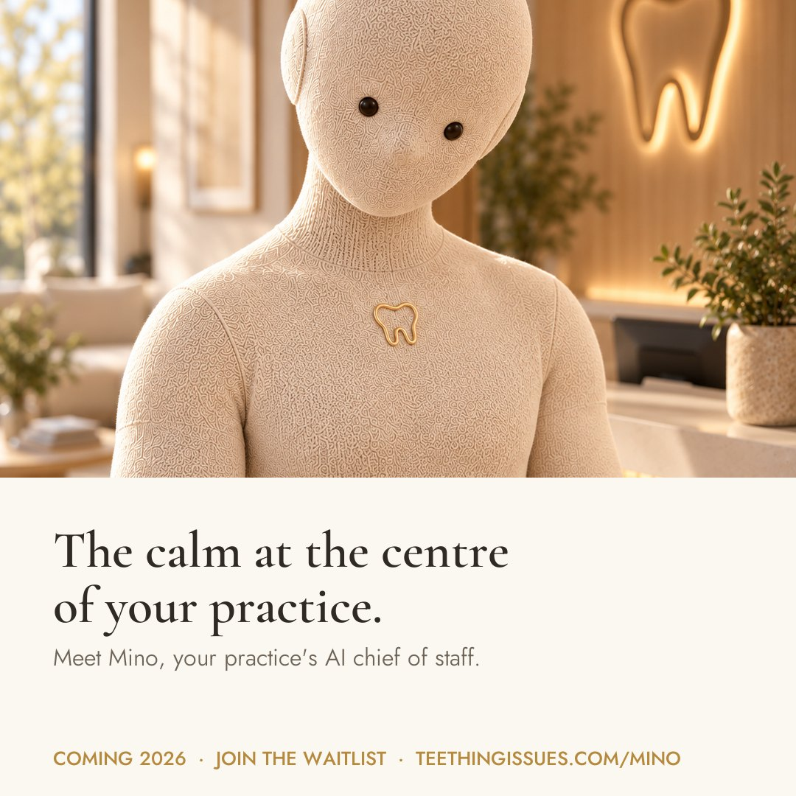
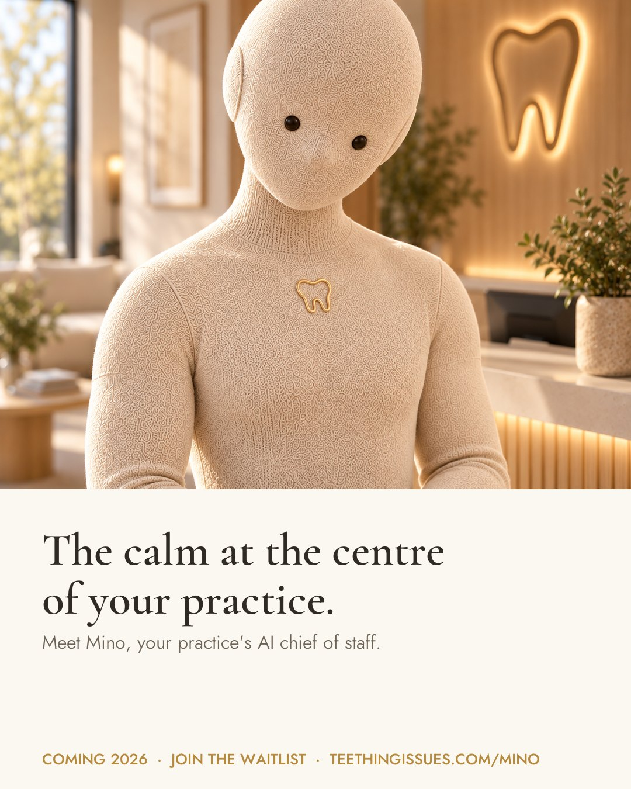
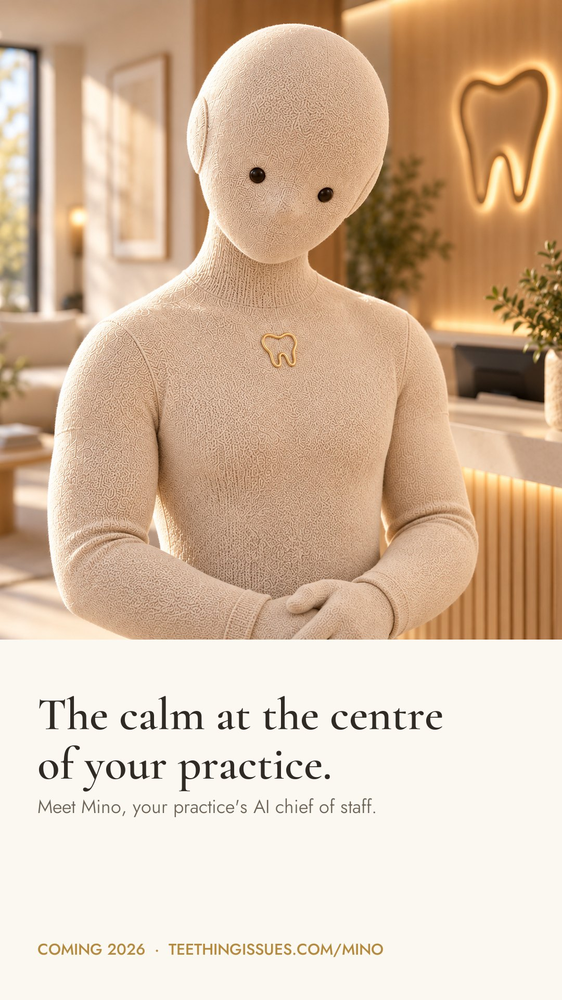

Main text
Running a practice shouldn't mean holding everything together on your own. Mino is your practice's AI chief of staff: one calm point of contact, with a whole team quietly handling compliance, admin, training and reception behind him. Built by dental professionals, CQC compliance experts and business growth experts. Join the waitlist for first access.
Headline
The calm at the centre of your practice
Description
Meet Mino. Coming 2026.
Button
Sign up